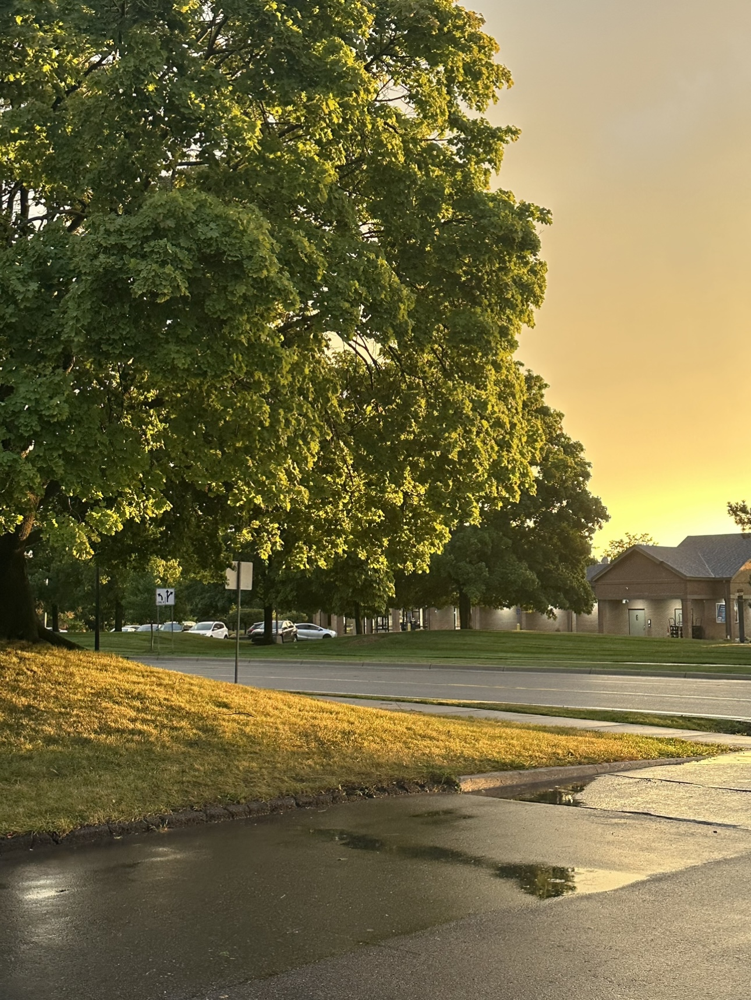

James Tian
Hi, I am James! I am a Computer Science student at the University of Michigan. If you want to get in touch, my email address is yijiangt@umich.edu.
For more information, check out my About Page

Hi, I am James! I am a Computer Science student at the University of Michigan. If you want to get in touch, my email address is yijiangt@umich.edu.
For more information, check out my About Page